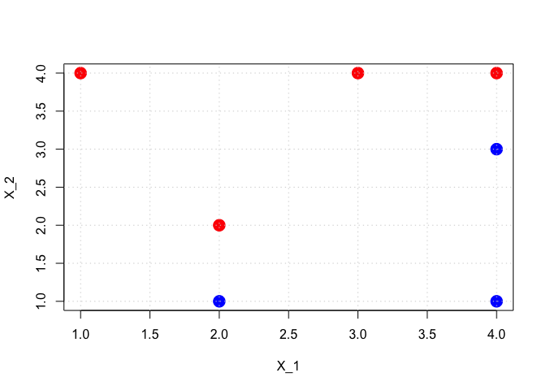
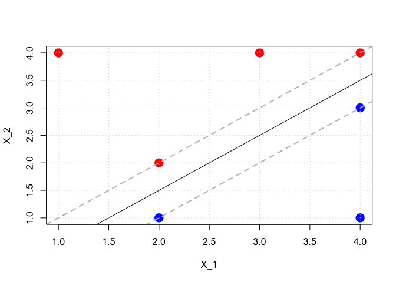
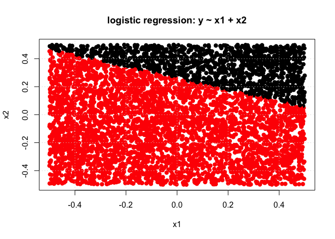
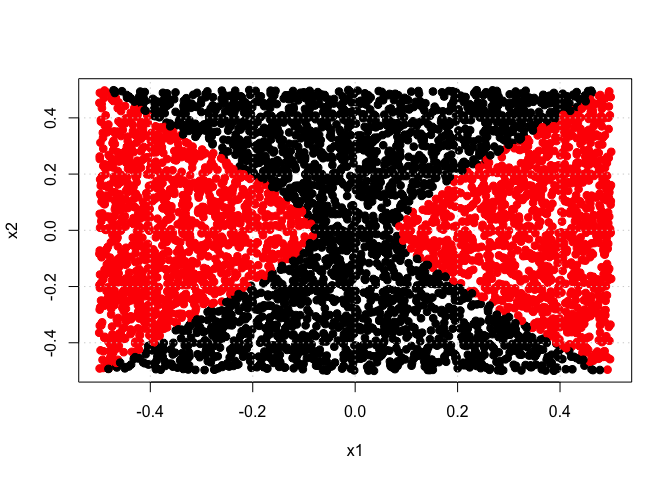
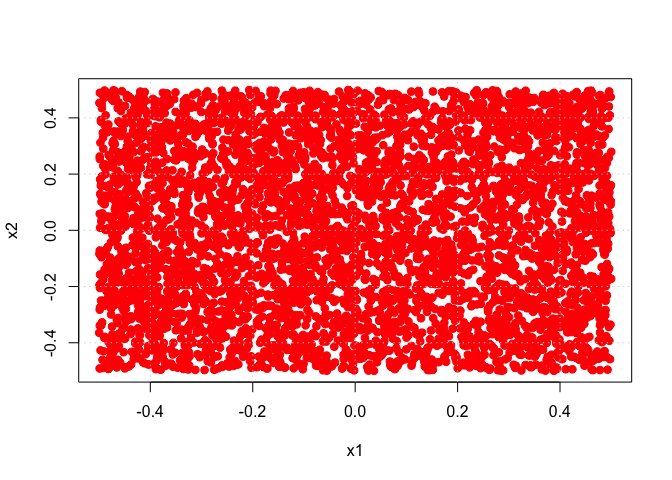
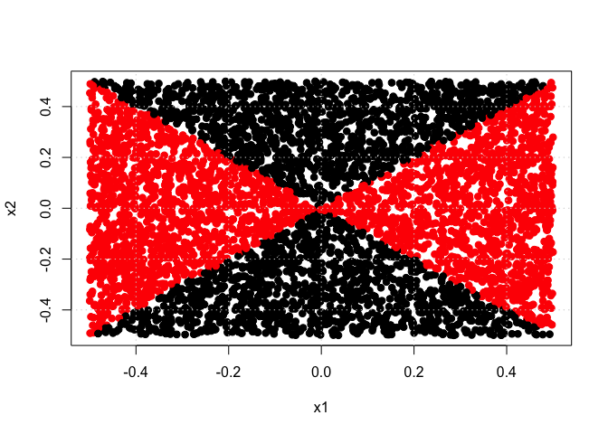
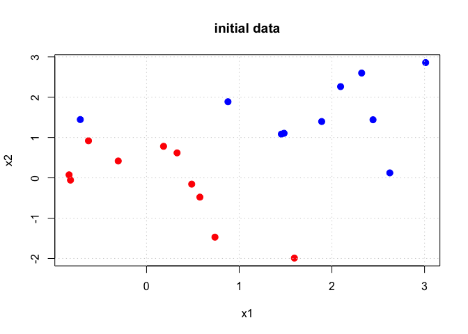
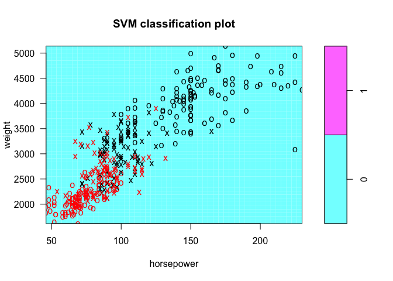
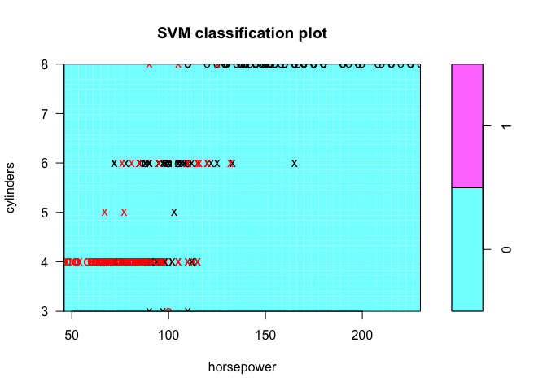
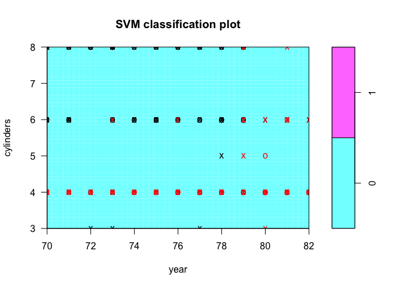

- Introduction
- 1. Chapter 2. Statistical Learning
- 2. Chapter 3. Linear Regression
- 3. Chapter 4. Classification
- 4. Chapter 5. Resampling Methods
- 5. Chapter 6. Linear Model Selection and Regularization
- 6. Chapter 7. Moving Beyond Linearity
- 7. Chapter 8. Tree-Based Methods
- 8. Chapter 9. Support Vector Machines
- 9. Chapter 10. Unsupervised Learning
- 10. References
- Published with GitBook
9.7 Exercises
Exercise 4
library(ISLR)
library(e1071)
set.seed(0)
DF <- data.frame(x1 = c(3, 2, 4, 1, 2, 4, 4), x2 = c(4, 2, 4, 4, 1, 3, 1), y = as.factor(c(rep(1, 4), rep(0, 3))))
colors <- c(rep("red", 4), rep("blue", 3))
# Use the svm code to find the linear boundary (take the cost of a margin violation to be very large):
svm.fit <- svm(y ~ ., data = DF, kernel = "linear", cost = 1e+06, scale = FALSE)
print(summary(svm.fit))
##
## Call:
## svm(formula = y ~ ., data = DF, kernel = "linear", cost = 1e+06,
## scale = FALSE)
##
##
## Parameters:
## SVM-Type: C-classification
## SVM-Kernel: linear
## cost: 1e+06
## gamma: 0.5
##
## Number of Support Vectors: 3
##
## ( 2 1 )
##
##
## Number of Classes: 2
##
## Levels:
## 0 1
# Use the output from svm.fit to compute/extract the linear decision boundary: For some reason this did not work ... not sure why.
# If anyone knows please contact me. Its based on the decomposition: f(x) = beta_0 + \sum_{i \in S} \alpha_i < x, x_i > given in
# the text and using the results from the svm call to get the support vectors via 'index'.
if (FALSE) {
beta_0 <- svm.fit$coef0
beta_x1 <- sum(svm.fit$coefs * DF[svm.fit$index, ]$x1)
beta_x2 <- sum(svm.fit$coefs * DF[svm.fit$index, ]$x2)
# Plot the decision boundary with abline( a=-beta_0/beta_x1, b=-beta_x2/beta_x1 )
}
# From a plot of the points the decision boundary is given by the line with:
slope <- (3.5 - 1.5)/(4 - 2)
intercept <- -2 * slope + 1.5
# Compute the two margin lines:
slope_m_upper <- slope
intercept_m_upper <- -2 * slope_m_upper + 2
slope_m_lower <- slope
intercept_m_lower <- -2 * slope_m_lower + 1
plot(DF$x1, DF$x2, col = colors, pch = 19, cex = 2, xlab = "X_1", ylab = "X_2", main = "")
grid()

plot(DF$x1, DF$x2, col = colors, pch = 19, cex = 2, xlab = "X_1", ylab = "X_2", main = "")
abline(a = intercept, b = slope, col = "black")
abline(a = intercept_m_upper, b = slope_m_upper, col = "gray", lty = 2, lwd = 2)
abline(a = intercept_m_lower, b = slope_m_lower, col = "gray", lty = 2, lwd = 2)
grid()

Exercise 5
library(MASS)
set.seed(0)
# Part (a):
n <- 5000
p <- 2
x1 <- runif(n) - 0.5
x2 <- runif(n) - 0.5
y <- 1 * (x1^2 - x2^2 > 0)
# y = 1*( x1^2 + x2^2 > 1 ) y = 1*( abs(x1) - abs(x2) > 0 )
DF <- data.frame(x1 = x1, x2 = x2, y = as.factor(y))
# Part (b):
plot(x1, x2, col = (y + 1), pch = 19, cex = 1.05, xlab = "x1", ylab = "x2", main = "initial data")
grid()
# Part (c):
m <- glm(y ~ x1 + x2, data = DF, family = binomial)
# Part (d): Predict the class label of the training data. When type='response' in predict we output probabilities:
y_hat <- predict(m, newdata = data.frame(x1 = x1, x2 = x2), type = "response")
predicted_class <- 1 * (y_hat > 0.5)
print(sprintf("Linear logistic regression training error rate= %10.6f", 1 - sum(predicted_class == y)/length(y)))
## [1] "Linear logistic regression training error rate= 0.395800"
plot(x1, x2, col = (predicted_class + 1), pch = 19, cex = 1.05, xlab = "x1", ylab = "x2", main = "logistic regression: y ~ x1 + x2")
grid()

# Part (e-f): Using logistic regression to fit a nonlinear model:
m <- glm(y ~ x1 + x2 + I(x1^2) + I(x2^2) + I(x1 * x2), data = DF, family = "binomial")
## Warning: glm.fit: algorithm did not converge
## Warning: glm.fit: fitted probabilities numerically 0 or 1 occurred
y_hat <- predict(m, newdata = data.frame(x1 = x1, x2 = x2), type = "response")
predicted_class <- 1 * (y_hat > 0.5)
print(sprintf("Non-linear logistic regression training error rate= %10.6f", 1 - sum(predicted_class == y)/length(y)))
## [1] "Non-linear logistic regression training error rate= 0.035800"
plot(x1, x2, col = (predicted_class + 1), pch = 19, cex = 1.05, xlab = "x1", ylab = "x2")
grid()

# Part (g): Fit a linear SVM to the data and report the error rate:
dat <- data.frame(x1 = x1, x2 = x2, y = as.factor(y))
# Do CV to select the value of cost using the 'tune' function:
tune.out <- tune(svm, y ~ ., data = dat, kernel = "linear", ranges = list(cost = c(0.001, 0.01, 0.1, 1, 5, 10, 100, 1000)))
print(summary(tune.out)) # <- use this output to select the optimal cost value
##
## Parameter tuning of 'svm':
##
## - sampling method: 10-fold cross validation
##
## - best parameters:
## cost
## 0.1
##
## - best performance: 0.4888
##
## - Detailed performance results:
## cost error dispersion
## 1 1e-03 0.4904 0.01743050
## 2 1e-02 0.4904 0.01743050
## 3 1e-01 0.4888 0.02040044
## 4 1e+00 0.4888 0.02040044
## 5 5e+00 0.4888 0.02040044
## 6 1e+01 0.4888 0.02040044
## 7 1e+02 0.4888 0.02040044
## 8 1e+03 0.4888 0.02040044
# The best model is stored in 'tune.out$best.model'
print(tune.out$best.model)
##
## Call:
## best.tune(method = svm, train.x = y ~ ., data = dat, ranges = list(cost = c(0.001,
## 0.01, 0.1, 1, 5, 10, 100, 1000)), kernel = "linear")
##
##
## Parameters:
## SVM-Type: C-classification
## SVM-Kernel: linear
## cost: 0.1
## gamma: 0.5
##
## Number of Support Vectors: 4913
y_hat <- predict(tune.out$best.model, newdata = data.frame(x1 = x1, x2 = x2))
y_hat <- as.numeric(as.character(y_hat)) # convert factor responses into numerical values
print(sprintf("Linear SVM training error rate= %10.6f", 1 - sum(y_hat == y)/length(y)))
## [1] "Linear SVM training error rate= 0.490400"
plot(x1, x2, col = (y_hat + 1), pch = 19, cex = 1.05, xlab = "x1", ylab = "x2")
grid()

# Part (h-i): Fit a linear SVM to the data and report the error rate:
# Do CV to select the value of cost using the 'tune' function:
tune.out <- tune(svm, y ~ ., data = dat, kernel = "radial", ranges = list(cost = c(0.001, 0.01, 0.1, 1, 5, 10, 100, 1000), gamma = c(0.5,
1, 2, 3, 4)))
print(summary(tune.out)) # <- use this output to select the optimal cost value
##
## Parameter tuning of 'svm':
##
## - sampling method: 10-fold cross validation
##
## - best parameters:
## cost gamma
## 1000 1
##
## - best performance: 0.0022
##
## - Detailed performance results:
## cost gamma error dispersion
## 1 1e-03 0.5 0.4904 0.019749543
## 2 1e-02 0.5 0.0296 0.013945927
## 3 1e-01 0.5 0.0218 0.011331372
## 4 1e+00 0.5 0.0172 0.006941021
## 5 5e+00 0.5 0.0066 0.004221637
## 6 1e+01 0.5 0.0072 0.004638007
## 7 1e+02 0.5 0.0048 0.003425395
## 8 1e+03 0.5 0.0034 0.002503331
## 9 1e-03 1.0 0.4904 0.019749543
## 10 1e-02 1.0 0.0256 0.013817863
## 11 1e-01 1.0 0.0226 0.008275801
## 12 1e+00 1.0 0.0146 0.005891614
## 13 5e+00 1.0 0.0080 0.003887301
## 14 1e+01 1.0 0.0074 0.004427189
## 15 1e+02 1.0 0.0050 0.003559026
## 16 1e+03 1.0 0.0022 0.001751190
## 17 1e-03 2.0 0.4904 0.019749543
## 18 1e-02 2.0 0.0218 0.011053406
## 19 1e-01 2.0 0.0188 0.007671013
## 20 1e+00 2.0 0.0124 0.003747592
## 21 5e+00 2.0 0.0098 0.004756282
## 22 1e+01 2.0 0.0092 0.002529822
## 23 1e+02 2.0 0.0054 0.003272783
## 24 1e+03 2.0 0.0030 0.002538591
## 25 1e-03 3.0 0.4904 0.019749543
## 26 1e-02 3.0 0.0186 0.011471704
## 27 1e-01 3.0 0.0200 0.007944250
## 28 1e+00 3.0 0.0122 0.004263541
## 29 5e+00 3.0 0.0090 0.004642796
## 30 1e+01 3.0 0.0088 0.002859681
## 31 1e+02 3.0 0.0054 0.003272783
## 32 1e+03 3.0 0.0034 0.002988868
## 33 1e-03 4.0 0.4904 0.019749543
## 34 1e-02 4.0 0.0182 0.008766096
## 35 1e-01 4.0 0.0178 0.007568942
## 36 1e+00 4.0 0.0118 0.003326660
## 37 5e+00 4.0 0.0100 0.004714045
## 38 1e+01 4.0 0.0094 0.002503331
## 39 1e+02 4.0 0.0046 0.003533962
## 40 1e+03 4.0 0.0040 0.002828427
# The best model is stored in 'tune.out$best.model'
print(tune.out$best.model)
##
## Call:
## best.tune(method = svm, train.x = y ~ ., data = dat, ranges = list(cost = c(0.001,
## 0.01, 0.1, 1, 5, 10, 100, 1000), gamma = c(0.5, 1, 2, 3,
## 4)), kernel = "radial")
##
##
## Parameters:
## SVM-Type: C-classification
## SVM-Kernel: radial
## cost: 1000
## gamma: 1
##
## Number of Support Vectors: 91
y_hat <- predict(tune.out$best.model, newdata = data.frame(x1 = x1, x2 = x2))
y_hat <- as.numeric(as.character(y_hat)) # convert factor responses into numerical values
print(sprintf("Nonlinear SVM training error rate= %10.6f", 1 - sum(y_hat == y)/length(y)))
## [1] "Nonlinear SVM training error rate= 0.001400"
plot(x1, x2, col = (y_hat + 1), pch = 19, cex = 1.05, xlab = "x1", ylab = "x2")
grid()

Exercise 6
set.seed(1)
x <- matrix(rnorm(20 * 2), ncol = 2)
y <- c(rep(-1, 10), rep(+1, 10))
x[y == 1, ] <- x[y == 1, ] + 1
x[y == 1, ] <- x[y == 1, ] + 0.5
plot(x[, 1], x[, 2], col = (y + 3), pch = 19, cex = 1.25, xlab = "x1", ylab = "x2", main = "initial data")
grid()

dat <- data.frame(x1 = x[, 1], x2 = x[, 2], y = as.factor(y))
tune.out <- tune(svm, y ~ ., data = dat, kernel = "linear", ranges = list(cost = c(0.001, 0.01, 0.1, 1, 5, 10, 100, 1000)))
print(summary(tune.out)) # <- use this output to select the optimal cost value
##
## Parameter tuning of 'svm':
##
## - sampling method: 10-fold cross validation
##
## - best parameters:
## cost
## 0.1
##
## - best performance: 0.05
##
## - Detailed performance results:
## cost error dispersion
## 1 1e-03 0.45 0.4972145
## 2 1e-02 0.45 0.4972145
## 3 1e-01 0.05 0.1581139
## 4 1e+00 0.05 0.1581139
## 5 5e+00 0.10 0.2108185
## 6 1e+01 0.10 0.2108185
## 7 1e+02 0.10 0.2108185
## 8 1e+03 0.10 0.2108185
# Generate test data:
x_test <- matrix(rnorm(20 * 2), ncol = 2)
y_test <- c(rep(-1, 10), rep(+1, 10))
x_test[y_test == 1, ] <- x_test[y_test == 1, ] + 1
x_test[y_test == 1, ] <- x_test[y_test == 1, ] + 0.5
dat_test <- data.frame(x1 = x_test[, 1], x2 = x_test[, 2], y = as.factor(y_test))
y_hat <- predict(tune.out$best.model, newdata = dat_test)
y_hat <- as.numeric(as.character(y_hat)) # convert factor responses into numerical values
print(sprintf("Linear SVM test error rate= %10.6f", 1 - sum(y_hat == y)/length(y)))
## [1] "Linear SVM test error rate= 0.100000"
Exercise 7
set.seed(0)
Auto <- read.csv("http://www-bcf.usc.edu/~gareth/ISL/Auto.csv", header = T, na.strings = "?")
Auto <- na.omit(Auto)
Auto$name <- NULL
# Part (a):
if (TRUE) {
AbvMedian <- rep(0, dim(Auto)[1]) # 0 => less than the median of mpg
AbvMedian[Auto$mpg > median(Auto$mpg)] <- 1 # 1 => greater than the median of mpg
} else {
AbvMedian <- rep("LT", dim(Auto)[1])
AbvMedian[Auto$mpg > median(Auto$mpg)] <- "GT"
}
AbvMedian <- as.factor(AbvMedian)
Auto$AbvMedian <- AbvMedian
Auto$mpg <- NULL
# Part (b):
tune.out <- tune(svm, AbvMedian ~ ., data = Auto, kernel = "linear", ranges = list(cost = c(0.001, 0.01, 0.1, 1, 5, 10, 100, 1000)))
print(summary(tune.out)) # <- use this output to select the optimal cost value
##
## Parameter tuning of 'svm':
##
## - sampling method: 10-fold cross validation
##
## - best parameters:
## cost
## 0.01
##
## - best performance: 0.09198718
##
## - Detailed performance results:
## cost error dispersion
## 1 1e-03 0.13301282 0.06623742
## 2 1e-02 0.09198718 0.05314051
## 3 1e-01 0.09705128 0.05251387
## 4 1e+00 0.09980769 0.06106182
## 5 5e+00 0.10493590 0.06456815
## 6 1e+01 0.10493590 0.06456815
## 7 1e+02 0.10237179 0.06172518
## 8 1e+03 0.10237179 0.06172518
# Some plots to explore with:
plot(tune.out$best.model, Auto, weight ~ horsepower)

plot(tune.out$best.model, Auto, cylinders ~ year)

plot(tune.out$best.model, Auto, cylinders ~ horsepower)

# Part (c) radial kernel:
tune.out <- tune(svm, AbvMedian ~ ., data = Auto, kernel = "radial", ranges = list(cost = c(0.001, 0.01, 0.1, 1, 5, 10, 100, 1000), gamma = c(0.5,
1, 2, 3, 4)))
print(summary(tune.out)) # <- use this output to select the optimal cost value
##
## Parameter tuning of 'svm':
##
## - sampling method: 10-fold cross validation
##
## - best parameters:
## cost gamma
## 1 1
##
## - best performance: 0.07153846
##
## - Detailed performance results:
## cost gamma error dispersion
## 1 1e-03 0.5 0.56891026 0.04198623
## 2 1e-02 0.5 0.56891026 0.04198623
## 3 1e-01 0.5 0.08935897 0.04884449
## 4 1e+00 0.5 0.07916667 0.05339765
## 5 5e+00 0.5 0.08166667 0.04495840
## 6 1e+01 0.5 0.08160256 0.05091217
## 7 1e+02 0.5 0.10467949 0.05988859
## 8 1e+03 0.5 0.11224359 0.05009346
## 9 1e-03 1.0 0.56891026 0.04198623
## 10 1e-02 1.0 0.56891026 0.04198623
## 11 1e-01 1.0 0.08935897 0.05314219
## 12 1e+00 1.0 0.07153846 0.05389633
## 13 5e+00 1.0 0.08666667 0.03643874
## 14 1e+01 1.0 0.07647436 0.04325754
## 15 1e+02 1.0 0.08923077 0.04540163
## 16 1e+03 1.0 0.08923077 0.04540163
## 17 1e-03 2.0 0.56891026 0.04198623
## 18 1e-02 2.0 0.56891026 0.04198623
## 19 1e-01 2.0 0.11250000 0.08236078
## 20 1e+00 2.0 0.07660256 0.05276112
## 21 5e+00 2.0 0.07910256 0.04084741
## 22 1e+01 2.0 0.08673077 0.03456265
## 23 1e+02 2.0 0.09435897 0.03999530
## 24 1e+03 2.0 0.09435897 0.03999530
## 25 1e-03 3.0 0.56891026 0.04198623
## 26 1e-02 3.0 0.56891026 0.04198623
## 27 1e-01 3.0 0.34467949 0.09233541
## 28 1e+00 3.0 0.08173077 0.05523019
## 29 5e+00 3.0 0.08423077 0.03636273
## 30 1e+01 3.0 0.08423077 0.03636273
## 31 1e+02 3.0 0.08929487 0.03655289
## 32 1e+03 3.0 0.08929487 0.03655289
## 33 1e-03 4.0 0.56891026 0.04198623
## 34 1e-02 4.0 0.56891026 0.04198623
## 35 1e-01 4.0 0.53564103 0.07557472
## 36 1e+00 4.0 0.07910256 0.04905343
## 37 5e+00 4.0 0.07910256 0.03292568
## 38 1e+01 4.0 0.08160256 0.03553445
## 39 1e+02 4.0 0.08673077 0.03837127
## 40 1e+03 4.0 0.08673077 0.03837127
plot(tune.out$best.model, Auto, weight ~ horsepower)
plot(tune.out$best.model, Auto, cylinders ~ year)

# Part (c) polynomial kernel:
tune.out <- tune(svm, AbvMedian ~ ., data = Auto, kernel = "polynomial", ranges = list(cost = c(0.001, 0.01, 0.1, 1, 5, 10, 100, 1000),
degree = c(1, 2, 3, 4, 5)))
print(summary(tune.out)) # <- use this output to select the optimal cost value
##
## Parameter tuning of 'svm':
##
## - sampling method: 10-fold cross validation
##
## - best parameters:
## cost degree
## 100 3
##
## - best performance: 0.07647436
##
## - Detailed performance results:
## cost degree error dispersion
## 1 1e-03 1 0.54070513 0.02854824
## 2 1e-02 1 0.11487179 0.03687839
## 3 1e-01 1 0.09429487 0.02927966
## 4 1e+00 1 0.09429487 0.03167651
## 5 5e+00 1 0.08166667 0.02907271
## 6 1e+01 1 0.08673077 0.02154213
## 7 1e+02 1 0.08929487 0.02767907
## 8 1e+03 1 0.08673077 0.03238015
## 9 1e-03 2 0.54070513 0.02854824
## 10 1e-02 2 0.41602564 0.09510107
## 11 1e-01 2 0.27288462 0.06169411
## 12 1e+00 2 0.24974359 0.09233499
## 13 5e+00 2 0.18596154 0.04015781
## 14 1e+01 2 0.18352564 0.04860916
## 15 1e+02 2 0.17326923 0.04998543
## 16 1e+03 2 0.16564103 0.06467847
## 17 1e-03 3 0.41346154 0.10154632
## 18 1e-02 3 0.26269231 0.06651432
## 19 1e-01 3 0.19653846 0.08760538
## 20 1e+00 3 0.09929487 0.03400384
## 21 5e+00 3 0.09173077 0.02959606
## 22 1e+01 3 0.07903846 0.02802006
## 23 1e+02 3 0.07647436 0.03377427
## 24 1e+03 3 0.08653846 0.04776394
## 25 1e-03 4 0.45423077 0.06640330
## 26 1e-02 4 0.38012821 0.07805202
## 27 1e-01 4 0.27038462 0.08220294
## 28 1e+00 4 0.19358974 0.07548574
## 29 5e+00 4 0.19365385 0.04717381
## 30 1e+01 4 0.16301282 0.04413317
## 31 1e+02 4 0.14506410 0.05769710
## 32 1e+03 4 0.14775641 0.03661928
## 33 1e-03 5 0.39794872 0.07665480
## 34 1e-02 5 0.28557692 0.08721784
## 35 1e-01 5 0.26269231 0.06651432
## 36 1e+00 5 0.13237179 0.06470603
## 37 5e+00 5 0.13237179 0.05493677
## 38 1e+01 5 0.13243590 0.04357633
## 39 1e+02 5 0.09935897 0.03240545
## 40 1e+03 5 0.08929487 0.03674971
Exercise 8
set.seed(0)
# Part (a):
n <- dim(OJ)[1]
n_train <- 800
train_inds <- sample(1:n, n_train)
test_inds <- (1:n)[-train_inds]
n_test <- length(test_inds)
# Part (b) Use a linear kernel to start with:
svm.fit <- svm(Purchase ~ ., data = OJ, kernel = "linear", cost = 0.01)
print(summary(svm.fit))
##
## Call:
## svm(formula = Purchase ~ ., data = OJ, kernel = "linear", cost = 0.01)
##
##
## Parameters:
## SVM-Type: C-classification
## SVM-Kernel: linear
## cost: 0.01
## gamma: 0.05555556
##
## Number of Support Vectors: 560
##
## ( 279 281 )
##
##
## Number of Classes: 2
##
## Levels:
## CH MM
# Part (c) Use this specific SVM to estimate training/testing error rates:
y_hat <- predict(svm.fit, newdata = OJ[train_inds, ])
print(table(predicted = y_hat, truth = OJ[train_inds, ]$Purchase))
## truth
## predicted CH MM
## CH 430 75
## MM 61 234
print(sprintf("Linear SVM training error rate (cost=0.01)= %10.6f", 1 - sum(y_hat == OJ[train_inds, ]$Purchase)/n_train))
## [1] "Linear SVM training error rate (cost=0.01)= 0.170000"
y_hat <- predict(svm.fit, newdata = OJ[test_inds, ])
print(table(predicted = y_hat, truth = OJ[test_inds, ]$Purchase))
## truth
## predicted CH MM
## CH 146 25
## MM 16 83
print(sprintf("Linear SVM testing error rate (cost=0.01)= %10.6f", 1 - sum(y_hat == OJ[test_inds, ]$Purchase)/n_test))
## [1] "Linear SVM testing error rate (cost=0.01)= 0.151852"
# Part (d): Use tune to select an optimal value for cost when we have a linear kernel:
tune.out <- tune(svm, Purchase ~ ., data = OJ, kernel = "linear", ranges = list(cost = c(0.001, 0.01, 0.1, 1, 5, 10, 100, 1000)))
print(summary(tune.out)) # <- use this output to select the optimal cost value
##
## Parameter tuning of 'svm':
##
## - sampling method: 10-fold cross validation
##
## - best parameters:
## cost
## 1
##
## - best performance: 0.1663551
##
## - Detailed performance results:
## cost error dispersion
## 1 1e-03 0.2355140 0.04174920
## 2 1e-02 0.1728972 0.03531397
## 3 1e-01 0.1710280 0.03116822
## 4 1e+00 0.1663551 0.02636037
## 5 5e+00 0.1672897 0.02836431
## 6 1e+01 0.1700935 0.02405017
## 7 1e+02 0.1700935 0.02445036
## 8 1e+03 0.1747664 0.02415084
# Part (e): Predict the performance on training and testing using the best linear model:
y_hat <- predict(tune.out$best.model, newdata = OJ[train_inds, ])
print(table(predicted = y_hat, truth = OJ[train_inds, ]$Purchase))
## truth
## predicted CH MM
## CH 434 75
## MM 57 234
print(sprintf("Linear SVM training error rate (optimal cost=1)= %10.6f", 1 - sum(y_hat == OJ[train_inds, ]$Purchase)/n_train))
## [1] "Linear SVM training error rate (optimal cost=1)= 0.165000"
y_hat <- predict(tune.out$best.model, newdata = OJ[test_inds, ])
print(table(predicted = y_hat, truth = OJ[test_inds, ]$Purchase))
## truth
## predicted CH MM
## CH 145 23
## MM 17 85
print(sprintf("Linear SVM testing error rate (optimal cost=1)= %10.6f", 1 - sum(y_hat == OJ[test_inds, ]$Purchase)/n_test))
## [1] "Linear SVM testing error rate (optimal cost=1)= 0.148148"
# Part (f): Use a radial kernel:
tune.out <- tune(svm, Purchase ~ ., data = OJ, kernel = "radial", ranges = list(cost = c(0.001, 0.01, 0.1, 1, 5, 10, 100, 1000), gamma = c(0.5,
1, 2, 3, 4)))
print(summary(tune.out)) # <- use this output to select the optimal cost value
##
## Parameter tuning of 'svm':
##
## - sampling method: 10-fold cross validation
##
## - best parameters:
## cost gamma
## 1 0.5
##
## - best performance: 0.1971963
##
## - Detailed performance results:
## cost gamma error dispersion
## 1 1e-03 0.5 0.3897196 0.06594509
## 2 1e-02 0.5 0.3897196 0.06594509
## 3 1e-01 0.5 0.2616822 0.04703947
## 4 1e+00 0.5 0.1971963 0.03697860
## 5 5e+00 0.5 0.2158879 0.03481578
## 6 1e+01 0.5 0.2149533 0.03412602
## 7 1e+02 0.5 0.2327103 0.03509343
## 8 1e+03 0.5 0.2345794 0.04588014
## 9 1e-03 1.0 0.3897196 0.06594509
## 10 1e-02 1.0 0.3897196 0.06594509
## 11 1e-01 1.0 0.2981308 0.04875165
## 12 1e+00 1.0 0.2056075 0.03890964
## 13 5e+00 1.0 0.2196262 0.04067777
## 14 1e+01 1.0 0.2224299 0.04198101
## 15 1e+02 1.0 0.2355140 0.04080878
## 16 1e+03 1.0 0.2336449 0.04383566
## 17 1e-03 2.0 0.3897196 0.06594509
## 18 1e-02 2.0 0.3897196 0.06594509
## 19 1e-01 2.0 0.3495327 0.06264704
## 20 1e+00 2.0 0.2224299 0.03349453
## 21 5e+00 2.0 0.2308411 0.04014947
## 22 1e+01 2.0 0.2364486 0.03990702
## 23 1e+02 2.0 0.2429907 0.05555313
## 24 1e+03 2.0 0.2551402 0.05024179
## 25 1e-03 3.0 0.3897196 0.06594509
## 26 1e-02 3.0 0.3897196 0.06594509
## 27 1e-01 3.0 0.3579439 0.06246863
## 28 1e+00 3.0 0.2214953 0.03238977
## 29 5e+00 3.0 0.2299065 0.03945456
## 30 1e+01 3.0 0.2308411 0.03634327
## 31 1e+02 3.0 0.2429907 0.04765439
## 32 1e+03 3.0 0.2551402 0.04472331
## 33 1e-03 4.0 0.3897196 0.06594509
## 34 1e-02 4.0 0.3897196 0.06594509
## 35 1e-01 4.0 0.3700935 0.06581988
## 36 1e+00 4.0 0.2205607 0.03446559
## 37 5e+00 4.0 0.2336449 0.03659608
## 38 1e+01 4.0 0.2308411 0.04134040
## 39 1e+02 4.0 0.2429907 0.03915827
## 40 1e+03 4.0 0.2542056 0.04510146
y_hat <- predict(tune.out$best.model, newdata = OJ[train_inds, ])
print(table(predicted = y_hat, truth = OJ[train_inds, ]$Purchase))
## truth
## predicted CH MM
## CH 454 70
## MM 37 239
print(sprintf("Radial SVM training error rate (optimal)= %10.6f", 1 - sum(y_hat == OJ[train_inds, ]$Purchase)/n_train))
## [1] "Radial SVM training error rate (optimal)= 0.133750"
y_hat <- predict(tune.out$best.model, newdata = OJ[test_inds, ])
print(table(predicted = y_hat, truth = OJ[test_inds, ]$Purchase))
## truth
## predicted CH MM
## CH 150 27
## MM 12 81
print(sprintf("Radial SVM testing error rate (optimal)= %10.6f", 1 - sum(y_hat == OJ[test_inds, ]$Purchase)/n_test))
## [1] "Radial SVM testing error rate (optimal)= 0.144444"
# Part (g): Use a polynomial kernel:
tune.out <- tune(svm, Purchase ~ ., data = OJ, kernel = "polynomial", ranges = list(cost = c(0.001, 0.01, 0.1, 1, 5, 10, 100, 1000),
degree = c(1, 2, 3)))
print(summary(tune.out)) # <- use this output to select the optimal cost value
##
## Parameter tuning of 'svm':
##
## - sampling method: 10-fold cross validation
##
## - best parameters:
## cost degree
## 1 1
##
## - best performance: 0.1700935
##
## - Detailed performance results:
## cost degree error dispersion
## 1 1e-03 1 0.3897196 0.04134040
## 2 1e-02 1 0.3728972 0.04630126
## 3 1e-01 1 0.1719626 0.03557409
## 4 1e+00 1 0.1700935 0.03784758
## 5 5e+00 1 0.1728972 0.03718796
## 6 1e+01 1 0.1738318 0.03795001
## 7 1e+02 1 0.1728972 0.03821758
## 8 1e+03 1 0.1757009 0.03680761
## 9 1e-03 2 0.3897196 0.04134040
## 10 1e-02 2 0.3691589 0.04891065
## 11 1e-01 2 0.3028037 0.04518745
## 12 1e+00 2 0.1962617 0.02331251
## 13 5e+00 2 0.1850467 0.03170844
## 14 1e+01 2 0.1850467 0.03463412
## 15 1e+02 2 0.1803738 0.02822712
## 16 1e+03 2 0.1803738 0.03116822
## 17 1e-03 3 0.3897196 0.04134040
## 18 1e-02 3 0.3691589 0.04891065
## 19 1e-01 3 0.2672897 0.04988316
## 20 1e+00 3 0.1878505 0.01674726
## 21 5e+00 3 0.1822430 0.01541977
## 22 1e+01 3 0.1859813 0.01354334
## 23 1e+02 3 0.1953271 0.02470702
## 24 1e+03 3 0.2028037 0.02788118
y_hat <- predict(tune.out$best.model, newdata = OJ[train_inds, ])
print(table(predicted = y_hat, truth = OJ[train_inds, ]$Purchase))
## truth
## predicted CH MM
## CH 433 74
## MM 58 235
print(sprintf("Polynomial SVM training error rate (optimal)= %10.6f", 1 - sum(y_hat == OJ[train_inds, ]$Purchase)/n_train))
## [1] "Polynomial SVM training error rate (optimal)= 0.165000"
y_hat <- predict(tune.out$best.model, newdata = OJ[test_inds, ])
print(table(predicted = y_hat, truth = OJ[test_inds, ]$Purchase))
## truth
## predicted CH MM
## CH 144 24
## MM 18 84
print(sprintf("Polynomial SVM testing error rate (optimal)= %10.6f", 1 - sum(y_hat == OJ[test_inds, ]$Purchase)/n_test))
## [1] "Polynomial SVM testing error rate (optimal)= 0.155556"